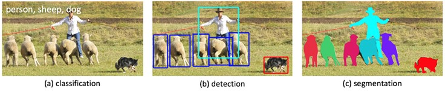

Computer vision and machine learning are rising topics in the computer science field. The ability for all processes in the future to be fully automated is an empowering idea and will be accomplished through the use of artificial intelligence. Applications for this technology range from self-driving cars, surveillance, to speech modeling. Scientific knowledge and innovation will continue to increase as computer vision becomes more complex, efficiently analyzing and completing tasks that would otherwise require large amounts of time for humans to accomplish.
Algorithms for line and edge recognition developed quickly, but true full scene reconstruction and high-level understanding eluded computer scientists until the application of machine learning techniques in the field of computer vision much more recently. Machine learning is the practice of equipping computers with the capabilities to learn in the same manner as humans do, and in that way to achieve true artificial intelligence. Learning machines arose primarily for specific purposes at first, such as a machine that learns how to program from observing human programmers.
An incredibly powerful method of machine learning are neural network systems. These systems loosely attempt to model the ability of the human brain to learn via large numbers of artificial neurons connected to others, with the ability to learn and adapt based on raw data and examples of correctly interpreted data. A convolutional neural network is a form of feed forward neural network that attempts to model biological visual systems, making it a perfect candidate for application to computer vision.
Dear Mr. Jerez,
Our names are Aditya Kumar, Maheck Jerez, and Patrick Mao. We are seniors at Tesla STEM High School in Redmond, Washington. As part of our curriculum, we are working on a project involving machine learning and computer vision. Our proposed product is to develop an artificially intelligent image editing program using deep convolutional inverse graphics network that will sample a database of images and recognize the common editing practices applied to each image. It will then learn to recognize similar features in an image a user provides to automatically create realistic image adjustments. We plan to use the Deep Learning Framework, Caffe, to develop our program.
We have done significant research regarding this topic and noticed your achievements in this field. We would love if you, or someone at your company, could provide some feedback regarding our project, such as its feasibility and things we should pay attention to throughout our process.
Sincerely,
Aditya Kumar, Maheck Jerez, and Patrick Mao